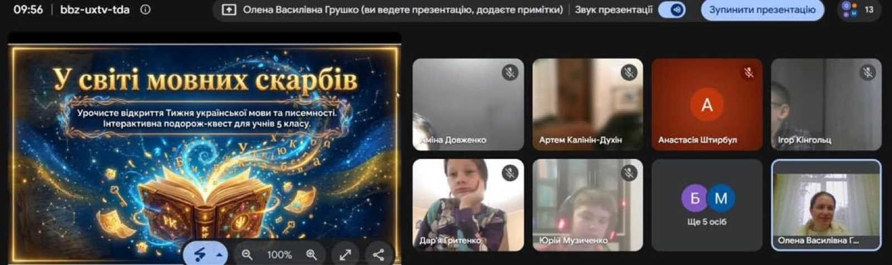
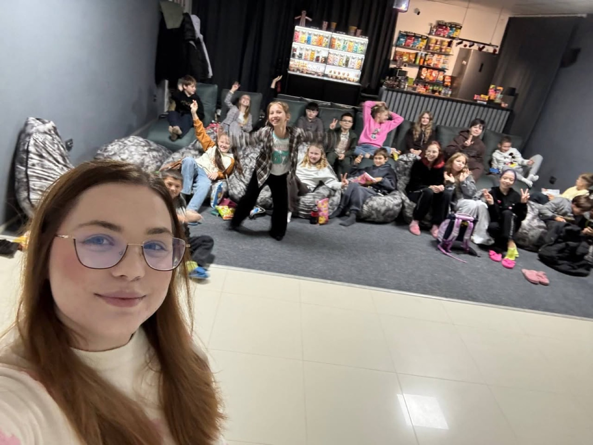
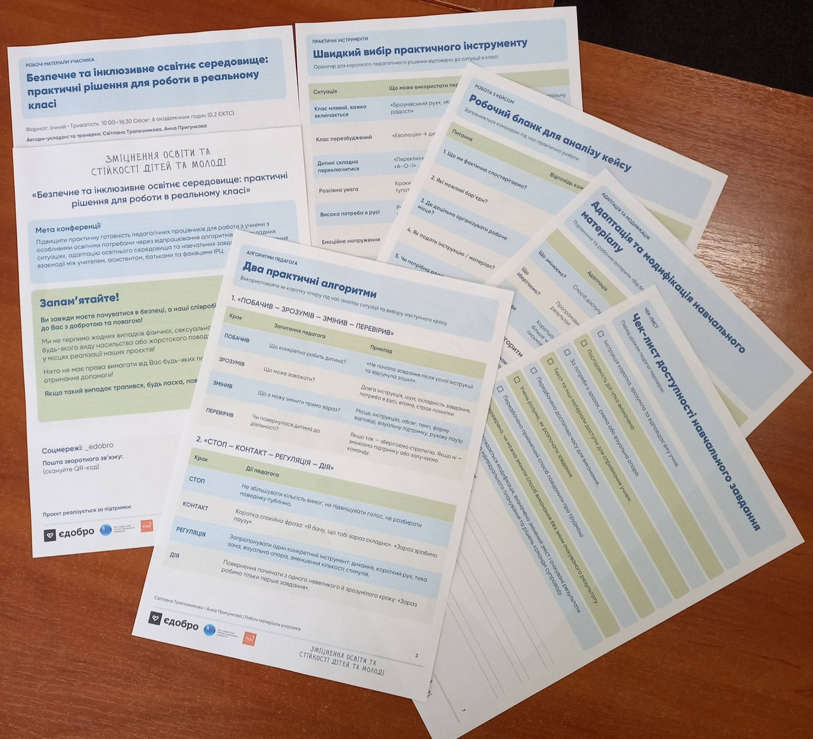
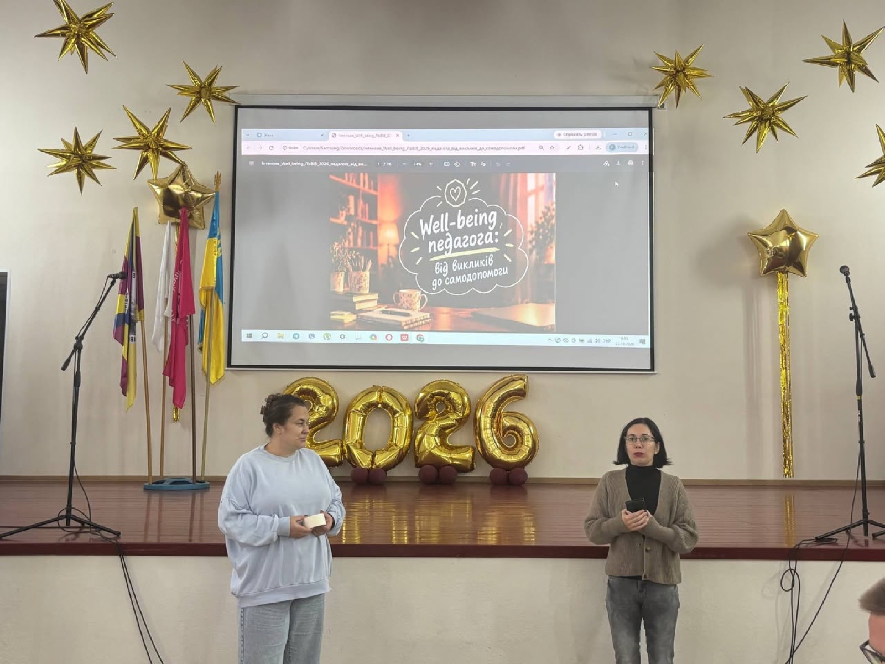
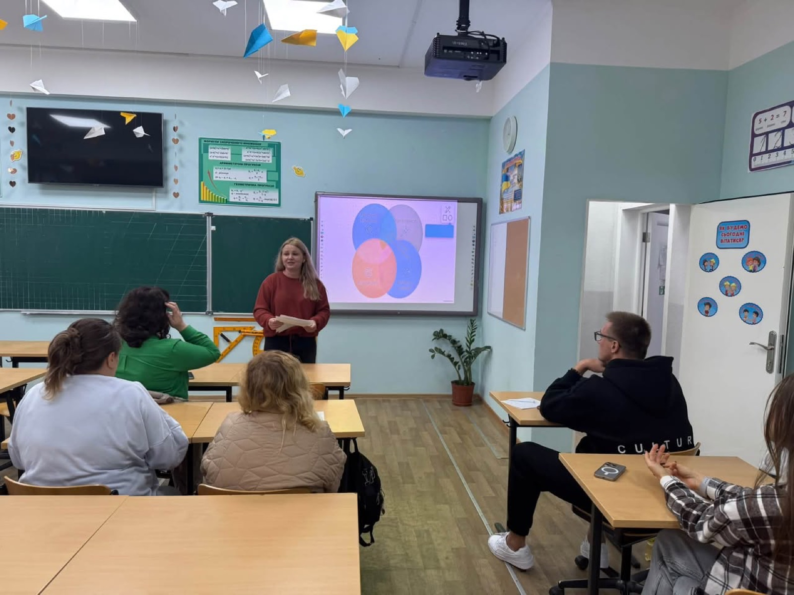
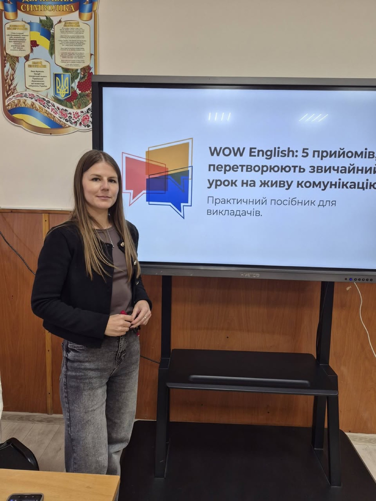
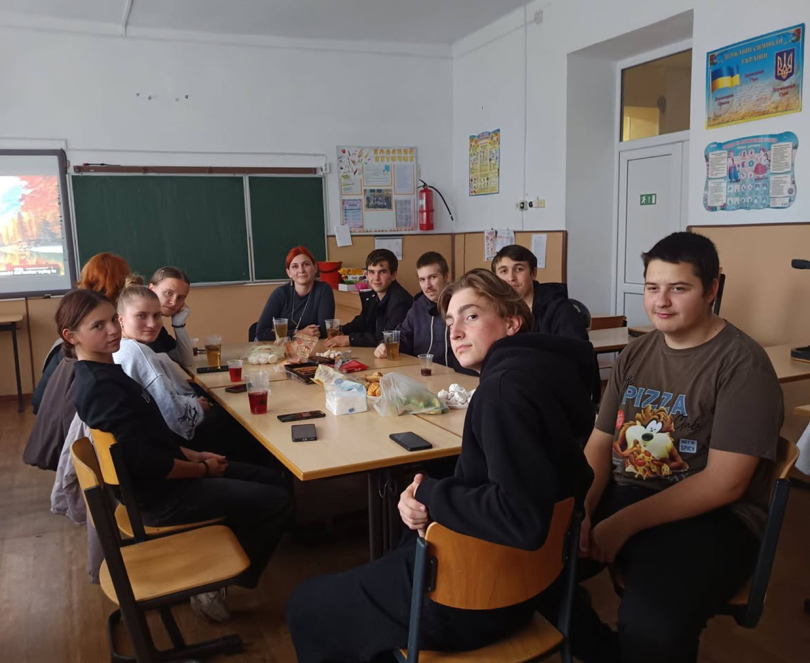
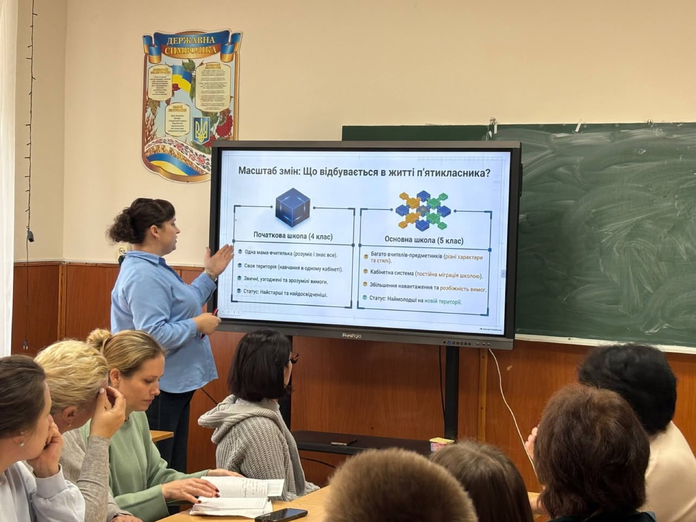
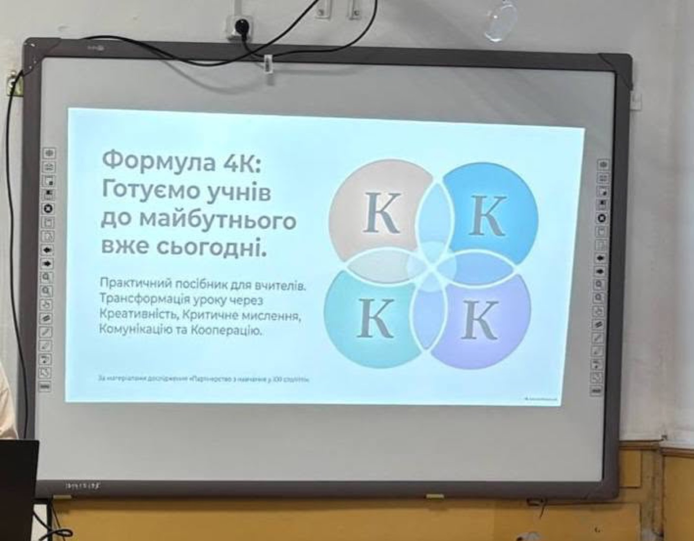

Навчання
Події, оголошення й досягнення ліцею. Дописи переносимо зі спільноти ліцею у Facebook.
- НавчанняВсім відомо, що мова як історичне явище тісно пов'язана з духовним та розумовим життям українського народу.
- НавчанняСтарт Тижня української писемності та мови — зі справжнім натхненням!
-

НавчанняУ нашому ліцеї стартував Тиждень української мови та писемності! -

НавчанняКанікули - це чудова нагода не лише відпочити від уроків, а й провести час разом! - НавчанняОсінні канікули — це чудовий час не лише для відпочинку, а й для відновлення сил та натхнення.
-

НавчанняБезпечне та інклюзивне освітнє середовище: практичні рішення для реального класу -

Навчання"Виховання через предмет та турбота про психологічний ресурс" у Біляївському ліцеї 2 відбулося… -

НавчанняПлідна співпраця, інновації та практичні рішення: відбулося засідання методичної комісії вчителів… -

НавчанняСучасні виклики та цифрові тренди: як пройшло засідання МО суспільно-гуманітарного циклу -

НавчанняКанікули з теплом у серці: затишні посиденьки 11-А класу -

НавчанняУ нашому ліцеї відбувся важливий психолого-педагогічний консиліум, присвячений адаптації учнів 5-х… -

НавчанняФормула 4К: готуємо учнів до майбутнього вже сьогодні!